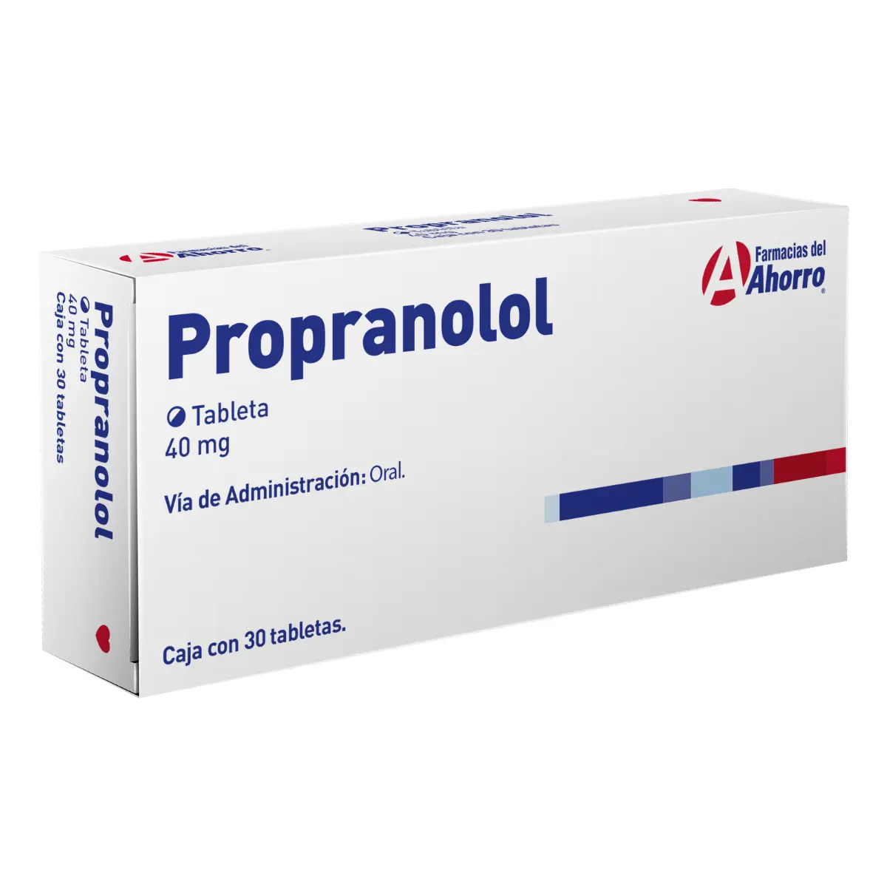
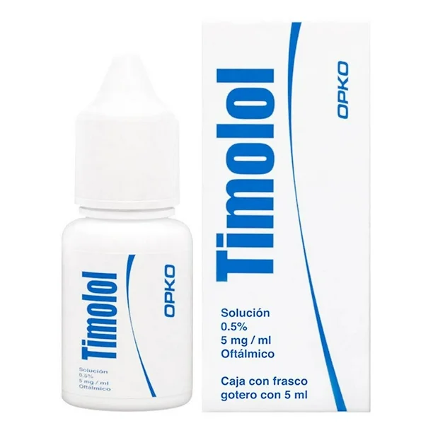

Bloqueo de β1 y β2 → ↓ actividad cardíaca y ↓ presión; pero también ↓ broncodilatación y ↓ glucogenólisis hepática
- HTA - Migraña (profilaxis) - Tremor esencial - Ansiedad - Feocromocitoma - Glaucoma (timolol) - Crisis ipertensiva
Asma / EPOC - Bradicardia - IC descompensada - Bloqueo AV 2°/3° - DM mal controlada
Propranolol: 40-80 mg BID (dos veces al día) (máx. 320 mg/día)
Nadolol: 40-240 mg/día QD (una vez al día)
Timolol: Oral: 10-30 mg/día Oftálmico: 1 gota cada 12 h
Broncoespasmo - Hipoglucemia enmascarada - Fatiga, disfunción sexual - Bradicardia
Aumentan efectos de bloqueadores de canales de Ca - Precaución con insulina - Interacción con antidepresivos tricíclicos